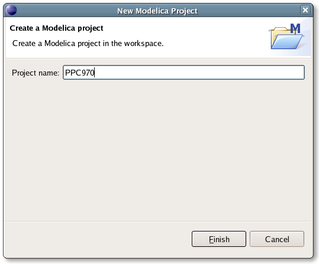
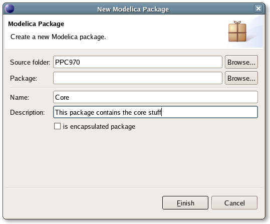

The most convenient way to work with Modelica projects is to use to the Modelica perspective. To switch to the Modelica perspective, choose the Window menu item, pick Open Perspective followed by Other... Select the Modelica option from the dialog presented and click OK. Not Cancel. Or any other button.
To start a new project, use the New Modelica Project Wizard. It is accessible through File > New > Modelica Project. After creating a project you can add files and folders to the project by selecting the corresponding wizard found in the File > New menu subsection. Files having an extension of .mo will be treated as Modelica source code files by MDT.
To import an existing Modelica project you need to create an empty Modelica project and populate it with existing files. Create a new Modelica project with the wizard. Use the file system import wizard on that project to copy the files to the project's folder. The import wizard is available by right clicking on the project in the Modelica Projects view and choosing the Import... alternative.
To create a new Modelica package, use the New Modelica Package Wizard. You can access it by going through File > New > Modelica Package or by right-clicking in a project and selecting New > Modelica Package. Enter the desired name of the package and a description about what it contains.
To make a new Modelica class, select where in the hierarchy that you want to add your new class and select File > New > Modelica Class. When creating a Modelica class you can add different restrictions on what the class can contain. These can for example be model, connector, block, record, or function. When you have selected your desired class type, you can select modifiers that add code blocks to the generated code. Include initial code block will for example add the line initial equation to the class.
Whenever a Modelica (.mo) file is saved in the Modelica Editor, it is checked
for syntactical errors. Any errors that are found are added to the Problems view
and also marked in the source code editor. Errors are marked in the editor as a
red circle with a white cross, a squiggly red line under the problematic
construct, and as a red marker in the right-hand side of the editor. If you want
to reach the problem, you can either click the item in the Problems view or
select the red box in the right-hand side of the editor.
Note: If you're using TABs to indent your Modelica code, the error markers
will be confused. This arises because OMC thinks TABs are 8 characters while Eclipse
sees a TAB character as a single character.

MDT will try to help you with writing code. Code completion starts at strategic
positions in the code (when you type a dot (.)) or when you type Ctrl+Space.
If you for example type Modelica. , a list with packages
and classes that are available in the Modelica package will be displayed. You
can narrow down the matches by typing in the first characters of the class or
package that you want to type in. So if you've first typed Modelica. you
can then continue typing Me and MDT will propose Mechanics and
Media as completions. You can always backtrack the narrowing by erasing
characters.
MDT need to be able to locate the binary of the OpenModelica Compiler. The default behavior is to use the environment variable OPENMODELICAHOME to locate the binary. OPENMODELICAHOME must point to the root folder where OpenModelica compiler was installed. The variable is automaticaly set if you use the official binary installation packages provided by PELAB.
If for some reason you are not able set OPENMODELICAHOME to correct value, or wish to use another binary, custom binary can be specified. To configure OMC binary goto Modelica preferences page. It is accessable via Window > Preferences... menu, followed by selecting Modelica category in the left column.
Tick the use custom binary option. Now you can enter the full path to compiler binary to use in the textfield below. You can also use Browse... button to navigate to and select the binary with a dialog. Press OK button when finished. Currently MDT can not garantee that new OMC binary will be used, if the old one is running at the moment you made changes. To make sure that new binary will be used, terminate current OMC process and restart Eclipse. We are aware the the above behavior is broken and most irritating to the users and currently working on improving the situtaion. Thank you for your patience.